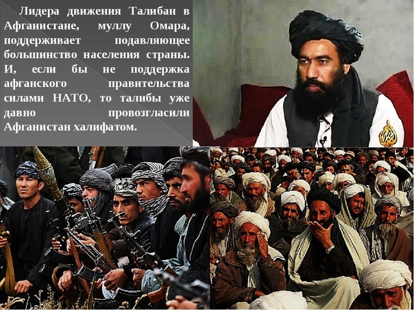

Бесконечен, древен.
Он привлекал к себе
Путешественников,
Завоевателей…
У Востока свои пути.
Свои думы,
Всему своя цена,
Свой счет.
Краткая хронология событий.
1929-1973 гг. , провозгласившего себя королем. В 60-70-е годы в Афганистане делались попытки приспособить страну к современному миру.
После 1965 года в стране определились два направления решения проблем: леворадикальное во главе с 21272 15 Народно- демократической партией Афганистана(НДПА) исламско- фундаменталистическое.
Внешняя политика Афганистана определялась нейтралитетом и неприсоединением. 1973 г.- антимонархисты из числа военных осуществили государственный переворот. Афганистан объявлен республикой. 1978 г.- под руководством партии НДПА вооруженное выступление армии. В результате переворота создан Революционный Совет (РС) во главе с лидером НДПА Тараки и Афганистан объявлен демократической республикой. СССР подписал с Афганистаном договор о дружбе и сотрудничестве..
1979 г. К власти пришел Амин, по приказу которого был убит Тараки. Крайне левая группировка X.Амина начала активно проводить в жизнь Декрет № 8 Реввоенсовета о земле, принятый еще 30 ноября 1978 года. Этот декрет, представлявшийся афганским реформаторам главным во всей системе преобразований, оказался неудачным из-за чрезмерной радикальности. Амин начал насаждать его на местах путем насилия и чрезмерных репрессий. Большинство крестьян, получивших землю по Декрету № 8, из-за отсутствия средств для ее обработки и злоупотреблений властей отказывались от получения земельных наделов.
Начиная с весны 1979 г. по стране прокатилась волна мятежей. Амин разворачивает компанию против своих противников. Поток беженцев в Пакистан и Иран резко увеличился, расширилась социальная база оппозиции. Амин пытается наладить диалог с США и афганской оппозицией, чем вызывает неприязнь Москвы. Советские спецслужбы начинают подыскивать нового лидера для Афганистана.
Конец 1979 г. Представители НДПА во главе с Бабраком Кармалем, который с августа 1978 г. на правах эмигранта живет в Чехословакии, при поддержке спецслужб социалистических государств создают нелегальные структуры для борьбы с режимом Амина. Москва ведет подготовку к перевороту в Кабуле. Исламисты в Афганистане также продолжают свою борьбу. Фактически в стране началась гражданская война.
Декабрь 1979 г. По просьбе Амина для усиления охраны резиденции Главы государства и Аэродрома Баграм B Афганистан переброшены два советских батальона. С одним из них прибыл Б.Кармаль.
12 декабря 1979 г. Л.И.Брежневым по предложению комиссии Политбюро ЦК КПСС по Афганистану было принято решение об оказании ДРА военной помощи «путем ввода на его территорию контингента советских войск».
25 декабря 1979 г. В соответствии с приказом Министра обороны маршала Советского Союза Д.Ф. Устинова в 15.00 по московскому времени начался ввод советских войск в Афганистан. В Кабул и Баграм самолетами был доставлен десант. Воздушно-десантные подразделения взяли под усиленную охрану(фактически под контроль) такие административные объекты, как ЦК НДПА, МО, МВД, МГБ, Минсвязи и др.
27 декабря 1979 г. Группы спецназа КГБ СССР взяли штурмом резиденцию афганского руководителя Амина в Даруламане. Амин убит советскими офицерами. К началу штурма дворца Бабрак Кармаль прибыл под охраной в гостевую резеденцию Совета Министров ДРА «Чихильсутун», где и получил сообщение о смерти Амина. После этого радиостанция Кабула передала обращение Кармаля к народу Афганистана. Фактически силами Госбезопасности и Министерства обороны СССР в Афганистане был совершен очередной переворот.
 Свержение аминовского правления и приход к власти левых сил во главе с Кармалем, который стал Премьер-министром, председателем Ревсовета и Генеральным секретарем ЦК НДПА, получили в Афганистане и СССР название второго этапа Саурской (Апрельской) революции. На Западе эти события были расценены как начало советской оккупации Афганистана.
Свержение аминовского правления и приход к власти левых сил во главе с Кармалем, который стал Премьер-министром, председателем Ревсовета и Генеральным секретарем ЦК НДПА, получили в Афганистане и СССР название второго этапа Саурской (Апрельской) революции. На Западе эти события были расценены как начало советской оккупации Афганистана.
Январь 1980 г Части советских войск под командованием генерал- лейтенанта В.Ю.Тухаринова заняли ключенвые районы страны. Совместно с частями афганской армии. Они взяли под контроль административные центры, жизненно важные объекты, аэродромы и основные магистрали. Были взяты также под охрану крупные хозяйственные объекты: Газопромыслы, электростанции, туннель перевала Саланг. Кроме соединений СА в Афганистане находились отдельные подразделения пограничных войск и должностные лица КГБ и МВД СССР.
25 июня 1980 г Шесть (позже -7) оппозиционных кабульскому режиму группировок создали Исламский союз моджахеддинов Афганистана. В январе 1981 г. в Афганистане вступил в силу Закон о всеобщей воинской повинности и снижении призывного возраста с 20 до 19 лет. В августе были приняты- явно запоздалые Поправки к Декрету о земле, направленные на смягчение отношения духовенства к властям.
В 1981 г. 40-я армия проводила крупномасштабные операции, вела боевые действия в «зонах ответственности частей и соединений» Бои шли на всей территории республики. 1982 г В стане - кризис и в экономике, и в социальной области. Появляется Закон о кооперативах, который, однако, обошел стороной самые насущные вопросы, явившиеся камнем преткновения для афганской кооперации.
Значительно усложнилась обстановка вокруг Кабула в связи с укреплением отрядов моджахедов в провинциях Парван, Каписа, Логар, Вардак, Лагман и их эффективными действиями. Значительные силы моджахедов концентрировались в провинции Кунар.
Зима 1983 г. Некоторые вооруженные отряды оппозиции впервые остаются на территории Афганистана на весь зимний период. Началось создание опорных базовых районов и баз в труднодоступных местах страны.
1983 г. стало ясно, что принятый годом ранее Закон о воде фактически ничего не дал крестьянам. По существу, в этом законе лишь закреплялись без каких-либо существенных нововведений уже давно соблюдавшиеся и соответствующие шариатским и обычно- правовым нормам права водопользователей. Вооруженные формирования моджахедов вновь пополнились теми, на чью поддержку рассчитывали власти ДРА.
1984 г Ведение активных боевых действий советскими войсками, в том числе широкомасштабных, совместно с афганскими соединениями и частыми. Работа по реорганизации и укреплению вооруженных сил ДРА. Эффективные боевые действия моджахедов в большинстве провинций Афганистана.
1985 г. Продолжалось противостояние между находившейся у власти НДПА и оппозиционными партиями, следовательно, между Вооруженными силами ДРА, а стало быть с частыми и подразделениями 40-й армии. Пламя войны продолжало полыхать, боевые действия отличались размахом и ожесточенностью. Шел поиск путей выхода из сложившегося тупика. Именно в этом году советское руководство наметило пути к развязке противостояния. Возник разговор о возможном выводе 40-й армии из Афганистана. Но до подписания Женевских соглашений осталось еще три года.
Май 1986 г. На XVIII пленуме ЦК НДПА на пост Генсека вместо Кармаля, котором разочаровалась Москва, избран Моххамед Наджибулла, возглавлявший афганскую конрразведку (ХАД).
Весна 1986 г. Советские спецслужбы разворачивают операции по вооружению афганских ваххабитов (наиболее радикально настроенные исламисты) и стравливанию их с отрядами оппозиции («семерки»). К операции по вооружению и материальному обеспечению ваххабитов привлекаются отдельные подразделения погранвойск Минобороны СССР.
Декабрь 1986 г Чрезвычайный пленум ЦК НДПА официально провозгласил установку на национальное примирение, прекращение братоубийственной войны и решение проблем Афганистана политическими методами.
3 января 1987 г. Ревсоветом республики принята Декларация « О национальном примирении», в которой, в частности, объявлялось, что с 15 января на всей территории страны прекращается огонь из всех видов оружия, приостанавливается ведение всех боевых операций, а войска возвращаются в пункты постоянной дислокации и переходят на регламент мирного времени. Новое руководство начинает проводить в жизнь политику национального примирения (ПНП). К этому времени в Пакистане находилось около 3 млн., а в Иране до 1, 5 млн. афганских беженцев.» Советские и афганские подразделения продолжают вести боевые действия против караванов, доставляющих оружие из Пакистана и Ирана.
Ноябрь 1987 г. Съезд всех народов и племен - Лойя джирга- официально изменяет развернутое название страны, убрав из него слово «демократическая» ДРА становится Республикой Афганистан (РА).
Одновременно утверждается Конституция РА, состоящая из 149 статей, сменившая «Основные принципы ДРА», опубликованные в апреле 1980 г.
14 февраля 1988 г. при посредничестве ООН в Женеве были подписаны соглашения между Афганистаном и Пакистаном о принципах взаимоотношений, главным из которых являлось прекращение вооруженного или другого вмешательства в дела Афганистана извне. B качестве гарантов выполнения Женевские соглашения подписали СССР и США. В соответствии с этими соглашениями Советский Союз взял обязательства вывести свои войска из Афганистана
B девятимесячный срок начиная с 15 мая 1988 года. Пакистан обязывался не создавать на своей территории военных баз и лагерей враждебных Афганистану сил, не обучать, не вооружать и не финансировать их, не перебрасывать через свою территорию оружие, снаряжение и боевые отряды в Афганистан, а также не предпринимать иные меры по дестабилизации там внутренней обстановки.
Для контроля за выполнением обязательств сторон был создан механизм наблюдения под эгидой ООН.
В период с 15 мая по 15 августа 1988 г. было выведено в Советский Союз 50,2 тысячи человек личного состава 40-й армии из гарнизонов Джелалабада, Газни, Гардеза, Файзабада, Кундуза, Лашкаргаха и Кандагара. После первого этапа вывода советские войска остались только в шести провинциях Афганистана. Афганским вооруженным силам было передано 58 военных городков с казарменно-жилищным фондом стоимостью 202 млн. 510 тыс. рублей. Оставшиеся войска размещаются в 122 военных городках (17 гарнизонов), стоимость казарменно-жилищного фонда которых составляет 497 млн. рублей.
Декабрь 1988 г. На 43-й сессии Генеральной Ассамблеи ООН М.С. Горбачев выступил с предложением, обращенным в первую очередь к Пакистану и США: заключить соглашение о прекращении с 1 января 1989 г. огня между всеми противоборствующими сторонами в Афганистане и одновременно прекратить с этого же времени оставки вооружений и техники правительственным войскам и оппозиции. Лидеры моджахедов отказались идти на переговоры с Кабуклом, пока во главе государства стоит Наджибулла. При этом оппозиция продолжала активные действия вооруженным путем.
4 февраля 1989 г. Последнее подразделение Советской Армии покинуло Кабул.
14 февраля 1989 г. Все войска выведены с территории Афганистана РА передано имущество и недвижимость на общую сумму более чем 830 млн. рублей.
15 февраля 1989 г. Последние советские войска покинули Афганистан. Последним, как утверждается, покинул Афганистан командующий 40-1 армией Генерал-лейтенант Б.В.Громов.
В конце февраля 1989 г. «шура» оппозиции избрала Президентом лидера «Альянса семи» Себхатуллу Моджаддади, а Премьер-министром- Абдул Расул Саяфа. Оппозиция начала широкомасштабные боевые действия против режима Наджибуллы.